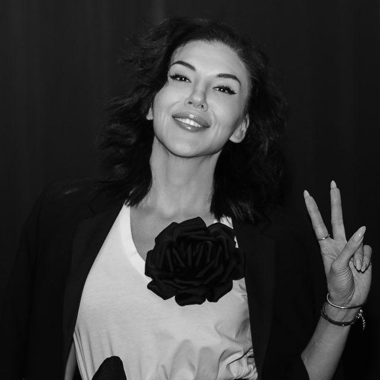

Любовь это или нехватка тепла: вопросы к себе
Ответьте честно, лучше письменно. Первые 4 вопроса про него, следующие 4 про вас.
Про него
- Что я знаю о нём, помимо своих ощущений рядом с ним?Его работа, друзья, как он ведёт себя в трудной ситуации.
- Сколько раз мы виделись вживую?Переписка не в счёт.
- Как он относится к другим людям?К официантам, к своей маме, к бывшим.
- Что мне в нём не нравится?Если ничего, скорее всего, я пока плохо его знаю.
Про себя
- Было бы так же сильно, если бы до него у меня не было долгой пустоты?
- Что со мной будет, если он сегодня не напишет?
- Чего я жду от него?Его самого или того, чтобы кто-то наконец обо мне заботился.
- Похоже ли это на мои прошлые увлечения?Так же быстро загорелось и так же больно закончилось?
Что значат ответы
На вопросы про него ответов мало. На вопросы про себя ответы такие: «было бы слабее», «мне будет плохо весь день», «жду заботы», «да, похоже». Тогда это скорее нехватка тепла.
Чувства настоящие. Вас притягивает тепло, которого давно не хватало. Самого человека вы пока почти не знаете.
Что делать, если это нехватка тепла
- Не спешите. Встречайтесь, узнавайте его и не принимайте важных решений в первые месяцы.
- Берите тепло и в других местах: встречи с подругами, семья, массаж, спорт, дела, которые радуют.
- Учитесь быть одной и радоваться этому. Один вечер в неделю проведите с собой так, как хотели бы провести его с ним.
Чего вопросы не решат
Вопросы помогают остановиться и не принять нехватку тепла за любовь. Но если вы снова и снова за пару дней загораетесь и начинаете зависеть от человека, дело в страхе остаться одной.
Он запускает этот сценарий раньше, чем вы успеваете задать себе первый вопрос.
Практикум «Новая реальность»
На практикуме мы уберём страх остаться одной и выйдем из сценария, который каждый раз заканчивается болью.

Анна Саба, врач-психотерапевт. Клинический опыт больше 10 лет.
Я врач, а не блогер. Работаю самыми современными методами психотерапии, чтобы изменения держались без откатов.
Участие бесплатное.
Зарегистрироваться бесплатноОткроется страница практикума с подробной программой.